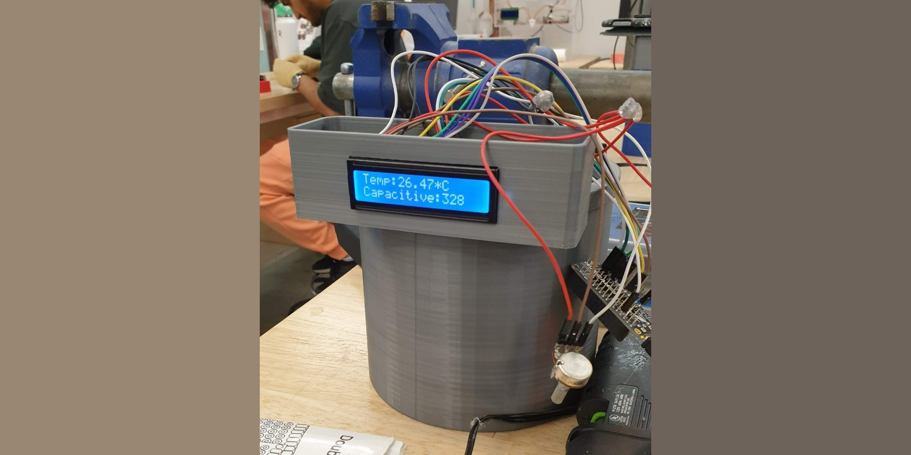
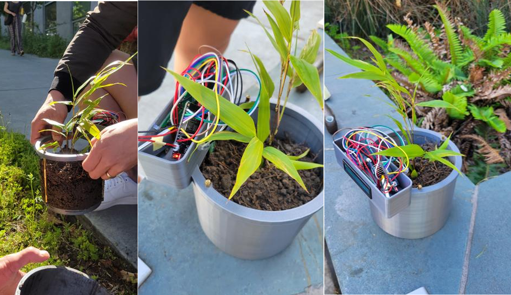
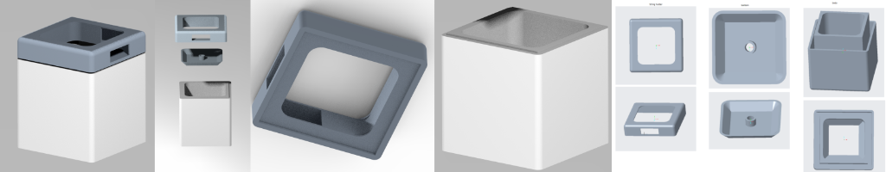
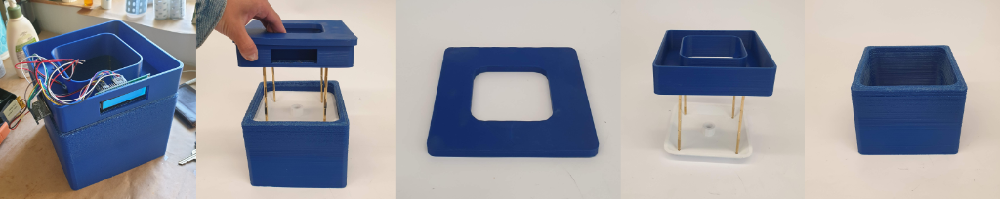
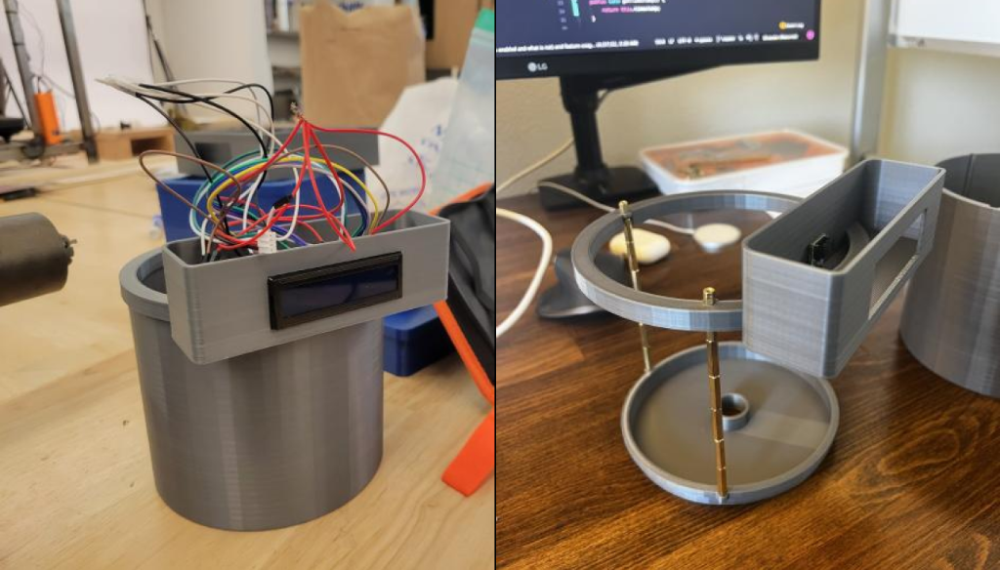

A smart plant pot that senses and communicates its needs through ambient expression.
Pot-able is a smart plant pot that senses and communicates its needs through ambient light and subtle movement — merging living material with interaction design. Rather than sending app notifications, the pot itself becomes the interface.
Soil moisture, light levels, and temperature are continuously monitored. The pot responds with gentle color-temperature shifts and a slow tilt toward better light sources.





Capacitive soil moisture sensor, ambient light sensor, and DHT22 for temperature/humidity all feeding a Raspberry Pi Zero W.
A two-axis servo gimbal tilts the pot toward the brightest light source, mimicking natural plant heliotropism as an ambient readout.